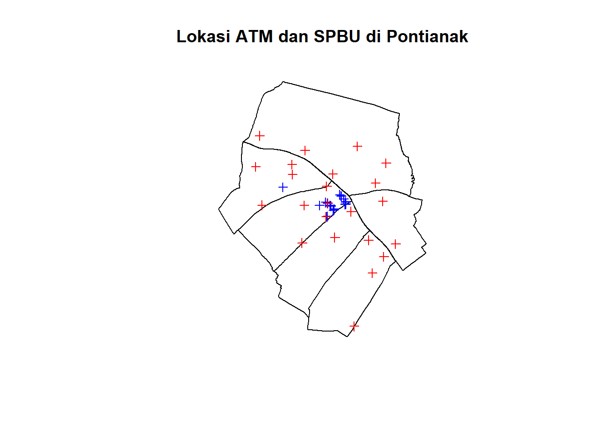
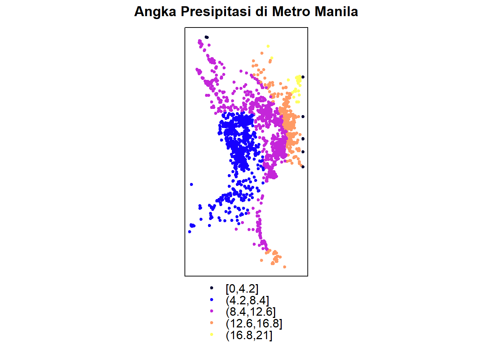
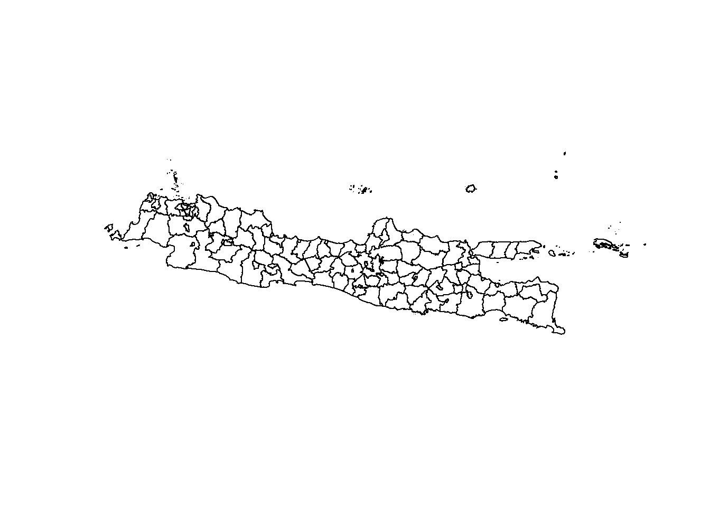
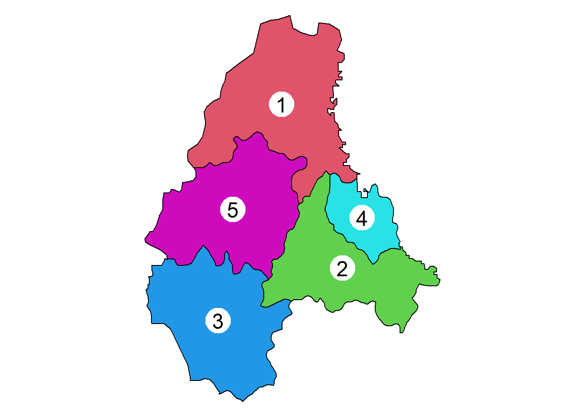
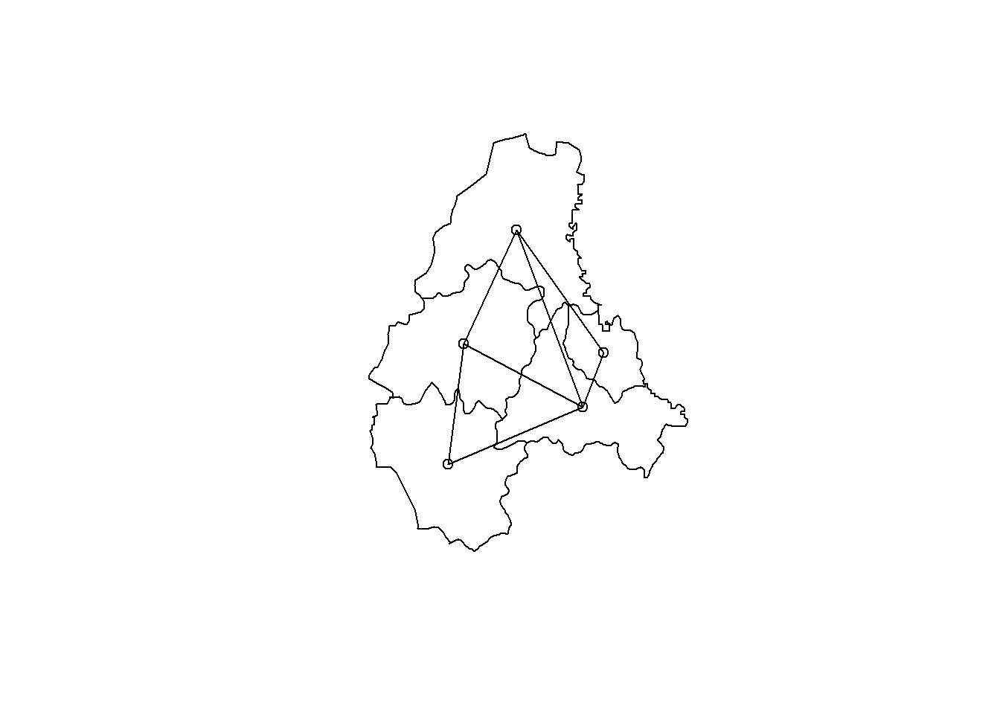
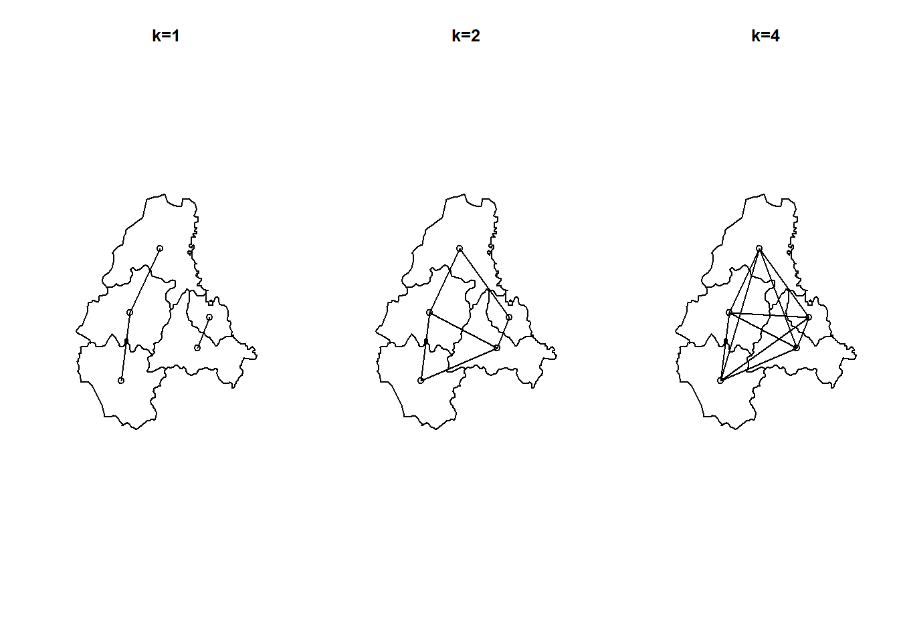
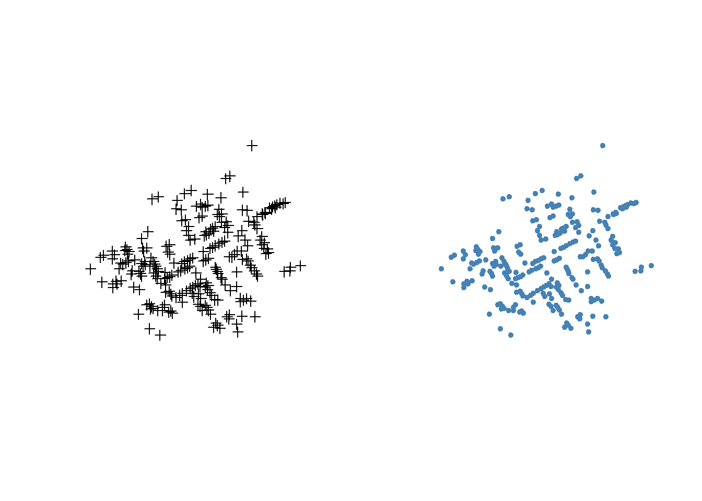
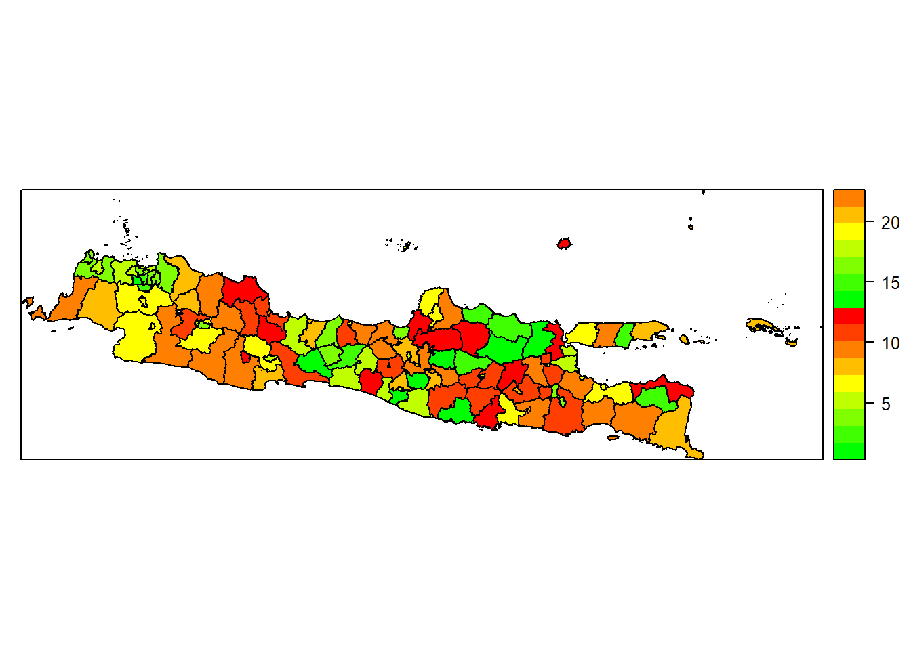
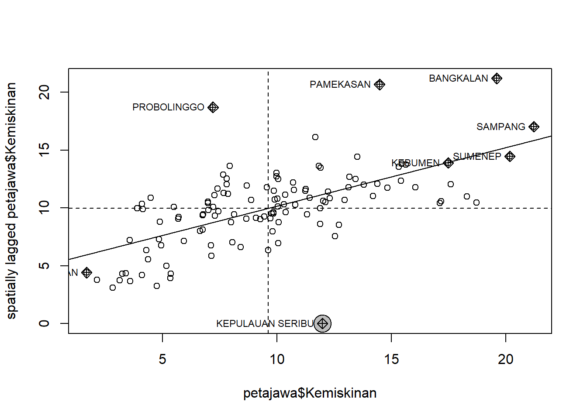

Modul Praktikum - Pelatihan Analisis Spasial
17 dan 19 Maret 2021
Modul 1 Pengantar Analisis Spasial dengan R Software
1.1 Pengenalan R Software
Apabila Anda belum memiliki R dan RStudio pada perangkat PC atau laptop Anda, silahkan ikut langkah berikut:
Download base R sesuai dengan operating system Anda pada laman https://cran.r-project.org.
Install software tersebut pada system Anda.
Silahkan download versi desktop untuk RStudio pada system Anda pada laman berikut: https://www.rstudio.com/products/RStudio/.
Install RStudio pada system Anda.
1.2 Pengenalan Data Spasial
Data spasial tidak hanya berisi baris dan kolom, namun objek geometrik, seperti titik, garis, ataupun poligon. Beberapa jenis data spasial adalah data titik, data kontinu, dan data area yang akan dibawah berikut ini. Sebelum membahas jenis data tersebut satu per satu, terlebih dulu akan dibahas struktur data spasial serta cara mengimpor data spasial ke dalam R.
1.2.1 Struktur Data Spasial
Tipe data spasial yang paling umum digunakan adalah shapefile, adapun tipe lain yang juga cukup populer adalah KML (Keyhole Markup Language). Data shapefile sebenarnya terdiri dari beberapa file dengan beberapa extension, di antaranya adalah .shp, .shx, dan .dbf. Beberapa package yang umum digunakan untuk bekerja dengan data spasial adalah sp dan rgdal.
1.2.2 Ilustrasi Data Cholera
Sebagai ilustrasi, akan digunakan data yang tersedia pada laman http://rtwilson.com/downloads/SnowGIS_SHP.zip. Pastikan Anda mengekstrak folder data tersebut pada direktori yang Anda inginkan. Selanjutnya, package rgdal akan digunakan untuk membaca data SnowGIS tersebut.
library(rgdal)Untuk melihat file apa saja yang ada di dalam folder shapefile tersebut, kita dapat menggunakan fungsi list.files() dan tuliskan direktori Anda masing-masing, ini dikenal sebagai dsn.
dsn<-paste("SnowGIS_SHP/SnowGIS_SHP")
list.files(dsn)## [1] "Cholera_Deaths.dbf" "Cholera_Deaths.prj"
## [3] "Cholera_Deaths.sbn" "Cholera_Deaths.sbx"
## [5] "Cholera_Deaths.shp" "Cholera_Deaths.shx"
## [7] "OSMap.tfw" "OSMap.tif"
## [9] "OSMap_Grayscale.tfw" "OSMap_Grayscale.tif"
## [11] "OSMap_Grayscale.tif.aux.xml" "OSMap_Grayscale.tif.ovr"
## [13] "Pumps.dbf" "Pumps.prj"
## [15] "Pumps.sbx" "Pumps.shp"
## [17] "Pumps.shx" "README.txt"
## [19] "SnowMap.tfw" "SnowMap.tif"
## [21] "SnowMap.tif.aux.xml" "SnowMap.tif.ovr"Terlihat pada output di atas bahwa folder tersebut memuat beberapa shapefile, di antaranya terdapat 6 file dengan nama Cholera_Deathsdan 5 file bernama Pumps. Kedua set data tersebut dikenal sebagai layer.
ogrListLayers(dsn)## [1] "Cholera_Deaths" "Pumps"
## attr(,"driver")
## [1] "ESRI Shapefile"
## attr(,"nlayers")
## [1] 2Kita dapat menggunakan fungsi ogrInfo() untuk mengetahui informasi mengenai layer tersebut.
ogrInfo(dsn, layer = "Cholera_Deaths")## Source: "D:\Research (eksternal dept)\pelatihan spasial (adj)\modul\SnowGIS_SHP\SnowGIS_SHP", layer: "Cholera_Deaths"
## Driver: ESRI Shapefile; number of rows: 250
## Feature type: wkbPoint with 2 dimensions
## Extent: (529160.3 180857.9) - (529655.9 181306.2)
## CRS: +proj=tmerc +lat_0=49 +lon_0=-2 +k=0.9996012717 +x_0=400000 +y_0=-100000 +ellps=airy +units=m +no_defs
## LDID: 87
## Number of fields: 2
## name type length typeName
## 1 Id 0 6 Integer
## 2 Count 0 4 IntegerFungsi readOGR() dapat digunakan untuk membaca data shapefile.
CholeraDeaths <- readOGR(dsn, layer = "Cholera_Deaths")## OGR data source with driver: ESRI Shapefile
## Source: "D:\Research (eksternal dept)\pelatihan spasial (adj)\modul\SnowGIS_SHP\SnowGIS_SHP", layer: "Cholera_Deaths"
## with 250 features
## It has 2 fieldssummary(CholeraDeaths)## Object of class SpatialPointsDataFrame
## Coordinates:
## min max
## coords.x1 529160.3 529655.9
## coords.x2 180857.9 181306.2
## Is projected: TRUE
## proj4string :
## [+proj=tmerc +lat_0=49 +lon_0=-2 +k=0.9996012717 +x_0=400000
## +y_0=-100000 +ellps=airy +units=m +no_defs]
## Number of points: 250
## Data attributes:
## Id Count
## Min. :0 Min. : 1.000
## 1st Qu.:0 1st Qu.: 1.000
## Median :0 Median : 1.000
## Mean :0 Mean : 1.956
## 3rd Qu.:0 3rd Qu.: 2.000
## Max. :0 Max. :15.000Selanjutnya kita dapat memeriksa class dari data CholeraDeaths tersebut.
class(CholeraDeaths)## [1] "SpatialPointsDataFrame"
## attr(,"package")
## [1] "sp"Data tersebut merupakan SpatialPointsDataFrame yang termasuk S4 class, maka untuk mengakses data slot perlu digunakan notasi @.
str(CholeraDeaths@data)## 'data.frame': 250 obs. of 2 variables:
## $ Id : int 0 0 0 0 0 0 0 0 0 0 ...
## $ Count: int 3 2 1 1 4 2 2 2 3 2 ...1.2.3 Visualisasi Data Cholera
Fungsi plot() dapat digunakan untuk membuat grafik paling sederhana dari data CholeraDeaths.
par(mfrow=c(1,2))
plot(CholeraDeaths)
plot(CholeraDeaths, pch=20, col="steelblue")
Perhatikan bahwa plot di atas hanya menunjukkan sebaran titik spasial, tanpa memberikan informasi yang jelas tentang lokasi data tersebut. Jika kita memiliki peta dalam bentuk data polygon, kita dapat mengimpor data tersebut dengan cara yang sama (seandainya datanya berupa shapefile), kemudian kita plot peta baru kemudian plot data titik seperti di atas.
Alternatif lainnya jika kita tidak ingin menggunakan peta polygon dari shapefile, kita dapat menggunakan beberapa package yang tersedia di R software, seperti ggmap, OpenStreetMap, leaflet, atau yang lain. Namun perhatikan bahwa untuk bisa menggunakan package OpenStreetMap, Anda harus memastikan bahwa jika Anda menggunakan R 64-bit maka Java yang terinstall di PC Anda juga harus sesuai, yaitu 64-bit.
Berikut ini akan ditunjukkan salah satu cara menampilkan peta dengan memanfaatkan package leaflet.
library(leaflet)
map <- leaflet() %>% setView(lng = -0.13659, lat =51.51328 , zoom = 12)
map %>% addTiles() Sebelum kedua peta dan data titik digabungkan. Pastikan terlebih dahulu apakah koordinat yang digunakan menggunakan skala yang sama.
head(coordinates(CholeraDeaths))## coords.x1 coords.x2
## [1,] 529308.7 181031.4
## [2,] 529312.2 181025.2
## [3,] 529314.4 181020.3
## [4,] 529317.4 181014.3
## [5,] 529320.7 181007.9
## [6,] 529336.7 181006.0Seperti terlihat di atas, koordinat pada data CholeraDeaths diukur pada skala yang berbeda dengan peta yang diambil dari package leaflet. Terdapat beberapa macam coordinate reference system (CRS), beberapa di antaranya yang cukup populer adalah suatu set EPSG (European Petroleum Survey Group) berikut:
EPSG:4326 juga dikenal sebagai WGS84, ukuran standard yang digunakan pada sistem GPS dan Google Earth.
EPSG:3857 digunakan pada Google Maps, Open Street Maps, dsb.
EPSG:27700 juga dikenal sebagai OSGB 1936, atau British National Grid: United Kingdom Ordnance Survey.
cholera_latlong <- CholeraDeaths %>%
spTransform(CRS("+init=epsg:4326"))
leaflet(data = CholeraDeaths) %>%
addTiles() %>%
addMarkers(cholera_latlong@coords[,1], cholera_latlong@coords[,2])Dapat dilihat di atas, bahwa setelah koordinatnya disamakan, kita dapat menampilkan data CholeraDeaths pada peta yang diperoleh dari Open Street Map melalui package leaflet.
1.3 Tipe Data Spasial
1.3.1 Tipe Data titik
Data spasial dapat berupa titik pengamatan pada lokasi tertentu, yang umumnya menyimpan koordinat lokasi longitude dan latitude. Data jenis ini hanya memiliki nilai pada titik tertentu saja, misalnya data kejadian kecelakaan, data rumah sakit, data kejadian kriminal, dan lain-lain. Sebagai ilustrasi, akan diperlihatkan data atm dan SPBU berikut ini.
library(rgdal)
petapontianak=readOGR(dsn="Peta Pontianak", layer="Pontianak_kec")## OGR data source with driver: ESRI Shapefile
## Source: "D:\Research (eksternal dept)\pelatihan spasial (adj)\modul\Peta Pontianak", layer: "Pontianak_kec"
## with 6 features
## It has 1 fieldsdataATM=read.csv("DATA ATM PONTIANAK.csv" , header=T)
dataSPBU=read.csv("Data SPBU Pontianak.csv", sep=";",header=T)
plot(petapontianak)
points(dataATM$lon, dataATM$lat, col="blue", pch=3)
points(dataSPBU$lon, dataSPBU$lat, col="red", pch=3)
title("Lokasi ATM dan SPBU di Pontianak")
Data yang digunakan adalah berupa titik yang menunjukkan lokasi ATM dan SPBU. Lokasi ATM ditunjukkan dengan warna biru, sedangkan lokasi SPBU ditunjukkan dengan warna merah
1.3.2 Tipe Data Kontinu
Tipe data ini merupakan pengamatan yang memiliki nilai tidak hanya pada titik yang tersampel saja, namun nilai pengamatan sebenarnya kontinu untuk semua area. Artinya, di luar dari titik yang tersampel pun memiliki nilai untuk peubah yang diamati tersebut. Misalnya polusi udara, temperatur, kelembapan udara, presipitasi, dan sebagainya. Sebagai ilustrai, berikut ini adalah contoh data presipitasi di daerah Metro Manila.
library(sp)
library(gstat)## Warning: package 'gstat' was built under R version 4.0.3metromanila=read.csv("metromanila.csv")
coordinates(metromanila)<-c("lon","lat")
spplot(metromanila,"precipitation", asp = 1,
cex=0.5, pch = 19, main="Angka Presipitasi di Metro Manila")
1.3.3 Tipe Data Area
Pada tipe data ini, pengamatan dilakukan pada level area. Area dapat mengacu pada sistem administrasi misalnya desa, kelurahan, kecamatan, kota, bahkan negara. Berikut ini adalah contoh data area yang diukur pada level kabupaten/kota. Untuk selanjutnya, pengamatan pada berbagai peubah dapat ditambahkan ke dalam data agar dapat diolah pada tahap analisis berikutnya.
library(spdep)
library(rgdal)
library(raster)
petajawa<- readOGR(dsn = "Jawamap", layer="jawa")## OGR data source with driver: ESRI Shapefile
## Source: "D:\Research (eksternal dept)\pelatihan spasial (adj)\modul\Jawamap", layer: "jawa"
## with 119 features
## It has 5 fieldsplot(petajawa)
1.4 Matriks Bobot dan Autokorelasi Spasial
Pada analisis data spasial, informasi ketergantungan antar lokasi dapat diukur dengan autokorelasi spasial. Untuk dapat menghitung nilai autokorelasi tersebut, terdapat beberapa tahap yang perlu dilakukan, yaitu:
menentukan kriteria kebertentanggaan antar lokasi pengamatan
menyusun matriks bobot spasial
matriks bobot spasial selanjutnya dapat dimanfaatkan baik untuk mengukur autokorelasi spasial maupun untuk menyusun pemodelan spasial.
1.4.1 Kriteria Kebertetanggaan
Ilustrasi yang akan digunakan pada bagian ini adalah data yang tersedia di dalam R. Data tersebut dapat dipanggil dengan fungsi berikut.
library(raster)
p <- shapefile(system.file("external/lux.shp", package="raster"))
p <- p[p$NAME_1=="Diekirch", ]Selanjutnya kita akan tentukan sembarang nilai yang akan disimpan pada setiap lokasi untuk mengilustrasikan nilai peubah yang diamati.
p$value <- c(10, 6, 4, 11, 6)
data.frame(p)## ID_1 NAME_1 ID_2 NAME_2 AREA value
## 0 1 Diekirch 1 Clervaux 312 10
## 1 1 Diekirch 2 Diekirch 218 6
## 2 1 Diekirch 3 Redange 259 4
## 3 1 Diekirch 4 Vianden 76 11
## 4 1 Diekirch 5 Wiltz 263 6Berikut adalah visualisasi dari data yang telah kita persiapkan.
par(mai=c(0,0,0,0))
plot(p, col=2:7)
coords <- coordinates(p)
points(coords, cex=6, pch=20, col='white')
text(p, 'ID_2', cex=1.5)
1.4.1.1 Contiguity Based
Kriteria yang umum digunakan pada ketetanggaan berbasis contiguity adalah queen contiguity, rook contiguity, dan bishop contiguity, seperti yang terlihat pada ilustrasi berikut ini.
/pelatihan%20spasial%20(adj)/Modul%20Pelatihan%20Spasial/gambar%201.png)
Program berikut ini dapat diguakan untuk dapat memperoleh matriks bobot berdasarkan kriteria queen contiguity.
library(spdep)
w <- poly2nb(p)
#lebih lengkap dapat dituliskan seperti berikut ini:
w <- poly2nb(p, queen=TRUE)
plot(p)
plot(w, coords, add=T)
Jika yang ingin digunakan adalah kriteria rook contiguity, maka kita dapat mengganti argumen pada program sebelumnya menjadi queen=FALSE.
w.rook <- poly2nb(p, queen=FALSE)
coords<-coordinates(p)
plot(p)
plot(w, coords, add=T)
Perhatikan bahwa pada kasus ini, kedua kriteria memperlihatkan hasil yang sama. Hal ini terjadi karena semua area pada ilustrasi ini bersinggungan sudut.
1.4.1.2 Distance Based
Kriteria kebertetanggaan dapat pula ditentukan berdasarkan jarak antar lokasi, beberapa pendekatan jarak yang dapat digunakan adalah \(k\) tetangga terdekat (k nearest neighbours (KNN)), radial distance, power distance, dan exponential distance. Ilustrasi KNN dan radial distance dapat dilihat pada subbab berikutnya dalam modul ini.
Pendekatan power distance dan exponential distance tidak diberikan ilustrasi pada modul ini, namun berikut adalah penjelasan singkat mengenai keduanya. Apabila bobot antara lokasi ke-\(i\) dan lokasi ke-\(j\) dinotasikan dengan \(w_{ij}\), dan jarak antara kedua lokasi tersebut dinotasikan dengan \(d_{ij}\), formula untuk memperoleh bobot jarak dengan pendekatan power distance adalah: \[ w_{ij}=d_{ij}^{-\alpha} \]
Sedangkan bobot jarak berdasarkan exponential distance dapat diperoleh dengan formula: \[ w_{ij}=e^{{-\alpha}d_{ij}} \]
1.4.1.2.1 K-Nearest Neighbours
Pada pendekatan ini, kita mendefinisikan lokasi yang merupakan tetangga dari lokasi ke-\(i\) adalah sejumlah \(k\) lokasi yang memiliki jarak terdekat dengan lokasi \(i\).
/pelatihan%20spasial%20(adj)/Modul%20Pelatihan%20Spasial/knn.png)
Berikut ini adalah ilustrasi untuk memperoleh ketetanggaan dengan pendekatan KNN menggunakan program R.
coords<-coordinates(p)
IDs<-row.names(as(p, "data.frame"))
p_kn1<-knn2nb(knearneigh(coords, k=1), row.names=IDs)
p_kn2<-knn2nb(knearneigh(coords, k=2), row.names=IDs)
p_kn4<-knn2nb(knearneigh(coords, k=4), row.names=IDs)
par(mfrow=c(1,3))
plot(p, main = "k=1")
plot(p_kn1, coords, add=T)
plot(p, main = "k=2")
plot(p_kn2, coords, add=T)
plot(p, main = "k=4")
plot(p_kn4, coords, add=T)
1.4.1.2.2 Radial Distance
Pada pendekatan ini,kita mendefinisikan lokasi yang merupakan tetangga dari lokasi ke-\(i\) adalah sejumlah \(k\) lokasi yang berada batas batas jarak (radius) antara \(d1\) dan \(d2\), diukur dari lokasi \(i\).
/pelatihan%20spasial%20(adj)/Modul%20Pelatihan%20Spasial/radial_distance.png)
Berikut ini adalah ilustrasi untuk memperoleh ketetanggaan dengan pendekatan KNN menggunakan program R.
dist<-unlist(nbdists(p_kn1, coords))
summary(dist)## Min. 1st Qu. Median Mean 3rd Qu. Max.
## 0.07316 0.07316 0.14159 0.11832 0.14159 0.16213sort(dist)## [1] 0.07315711 0.07315711 0.14158521 0.14158521 0.16213194max_k1<-max(dist)
p_kd1<-dnearneigh(coords, d1=0, d2=0.75*max_k1, row.names=IDs)
p_kd2<-dnearneigh(coords, d1=0, d2=1*max_k1, row.names=IDs)
p_kd3<-dnearneigh(coords, d1=0, d2=1.5*max_k1, row.names=IDs)
par(mfrow=c(1,3))
plot(p, main = "Distance=0.75*max_k1")
plot(p_kd1,coords, add=T)
plot(p, main = "Distance=1*max_k1")
plot(p_kd2,coords, add=T)
plot(p, main = "Distance=1.5*max_k1")
plot(p_kd3,coords, add=T)
1.4.2 Matriks Pembobot Spasial
Matriks pembobot spasial dapat berisi elemen biner (1 atau 0) untuk menunjukkan ketetanggaan setiap lokasi, atau berupa matriks yang sudah distandardisasi. Umumnya, matriks pembobot spasial merupakan matriks yang terstandardisasi baris (row standardized).
nb2mat(w, style="B") #matriks pembobot biner## [,1] [,2] [,3] [,4] [,5]
## 0 0 1 0 1 1
## 1 1 0 1 1 1
## 2 0 1 0 0 1
## 3 1 1 0 0 0
## 4 1 1 1 0 0
## attr(,"call")
## nb2mat(neighbours = w, style = "B")nb2mat(w) # matriks pembobot row standardized## [,1] [,2] [,3] [,4] [,5]
## 0 0.0000000 0.3333333 0.0000000 0.3333333 0.3333333
## 1 0.2500000 0.0000000 0.2500000 0.2500000 0.2500000
## 2 0.0000000 0.5000000 0.0000000 0.0000000 0.5000000
## 3 0.5000000 0.5000000 0.0000000 0.0000000 0.0000000
## 4 0.3333333 0.3333333 0.3333333 0.0000000 0.0000000
## attr(,"call")
## nb2mat(neighbours = w)1.4.3 Autokorelasi Spasial
1.4.3.1 Indeks Moran Global
Sebagai ilustrasi, akan digunakan data persentase kemiskinan kabupaten/kota di Pulau Jawa. Berikut adalah syntax untuk membaca peta Pulau Jawa dan data persentase kemiskinan Kabupaten/Kota di Pulau Jawa
library(rgdal)
library(spdep)
library(sp)
petajawa=readOGR(dsn="Jawamap", layer="jawa")## OGR data source with driver: ESRI Shapefile
## Source: "D:\Research (eksternal dept)\pelatihan spasial (adj)\modul\Jawamap", layer: "jawa"
## with 119 features
## It has 5 fieldsdatajawa=read.csv("Pulau Jawa.csv", header=T, sep=";")
petajawa$Kemiskinan<- datajawa$Kemiskinan
k=9
colfunc <- colorRampPalette(c("green", "yellow","red"))
color <- colfunc(k)
spplot(petajawa, "Kemiskinan", col.regions=color)
Seandainya kita akan menggunakan kriteria queen contiguity, maka dapat dilakukan dengan syntax berikut untuk mendefinisikan matriks pembobotnya
w.queen <- poly2nb(petajawa)
w.queen## Neighbour list object:
## Number of regions: 119
## Number of nonzero links: 522
## Percentage nonzero weights: 3.68618
## Average number of links: 4.386555
## 1 region with no links:
## 0Terlihat pada output tersebut, bahwa terdapat 1 wilayah yang tidak memiliki tetangga, sehingga untuk syntax selanjutnya perlu ditambahkan zero.policy=T.
wqueen <- nb2listw(w.queen, zero.policy=T)Seandainya kita ingin menguji autokorelasi menggunakan pendekatan indeks moran, maka kita dapat menggunakan fungsi moran.test().
I1 <- moran.test(petajawa$Kemiskinan, wqueen, zero.policy=T, alternative="greater")
#alternative hyptohesis could be either of "two.sided", "greater", or "less"
I1##
## Moran I test under randomisation
##
## data: petajawa$Kemiskinan
## weights: wqueen n reduced by no-neighbour observations
##
##
## Moran I statistic standard deviate = 7.7638, p-value = 4.12e-15
## alternative hypothesis: greater
## sample estimates:
## Moran I statistic Expectation Variance
## 0.517060772 -0.008547009 0.004583226Berdasarkan output di atas, diperoleh nilai p-value yang sangat kecil, artinya kita dapat menolak hipotesis nol yang menyatakan bahwa tidak terdapat autokorelasi.Artinya kita dapat menyimpulkan bahwa terdapat cukup bukti untuk menyatakan bahwa terdapat autokorelasi pada taraf nyata 5%.
Uji moran dapat pula dilakukan dengan melibatkan simulasi monte carlo.
set.seed(123)
MC<- moran.mc(petajawa$Kemiskinan, wqueen, nsim=99, zero.policy=T, alternative="greater")
# View results (including p-value)
MC##
## Monte-Carlo simulation of Moran I
##
## data: petajawa$Kemiskinan
## weights: wqueen
## number of simulations + 1: 100
##
## statistic = 0.51706, observed rank = 100, p-value = 0.01
## alternative hypothesis: greater1.4.3.2 Indeks Moran Lokal
Pendekatan ini termasuk ke dalam Local Indicators for Spatial Association (LISA), yang mengindentifikasi autokorelasi pada tingkat lokal.
oid <- order(petajawa$Kemiskinan)
resI <- localmoran(petajawa$Kemiskinan, wqueen)## Warning in lag.listw(listw, z, zero.policy = zero.policy, NAOK = NAOK): NAs in
## lagged valueshead(resI)## Ii E.Ii Var.Ii Z.Ii Pr(z > 0)
## 0 NA 0.000000000 0.0000000 NA NA
## 1 2.514160 -0.008474576 0.1571389 6.363741 9.844878e-11
## 2 2.172630 -0.008474576 0.1571389 5.502177 1.875645e-08
## 3 2.040414 -0.008474576 0.2398473 4.183607 1.434598e-05
## 4 1.872452 -0.008474576 0.1902223 4.312619 8.066594e-06
## 5 1.382831 -0.008474576 0.1902223 3.190008 7.113445e-04petajawa$z.li <- resI[,4]
petajawa$pvalue <- resI[,5]
lm.palette <- colorRampPalette(c("white","orange", "red"), space = "rgb")
spplot(petajawa, zcol="z.li", col.regions=lm.palette(20), main="Local Moran")moran.plot(petajawa$Kemiskinan, wqueen, zero.policy=T, labels=petajawa$KABKOT)
1.5 Sumber Pustaka
Agafonkin, V. (n.d.). Leaflet for R - Markers. rstudio.github.io. Retrieved from https://rstudio.github.io/leaflet/markers.html
Baumer, B.S., Kaplan, D.T., Horton, N.J. 2017. Modern Data Science with R. CRC Press.
UQ SLC Digital Team. (2020, April 16). Creating maps using R. Language Technology and Data Analysis Laboratory (LADAL). Retrieved from https://slcladal.github.io/maps.html